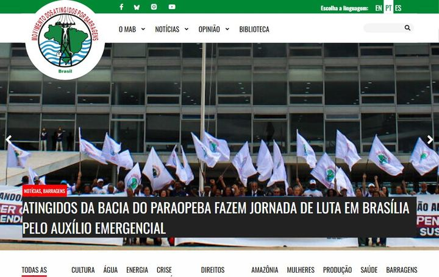
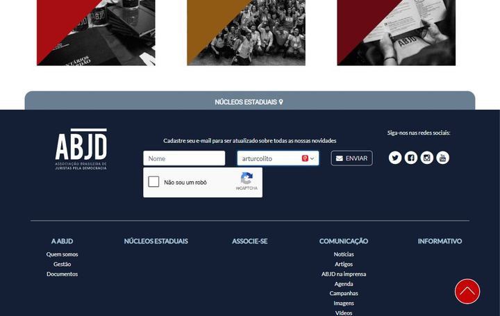
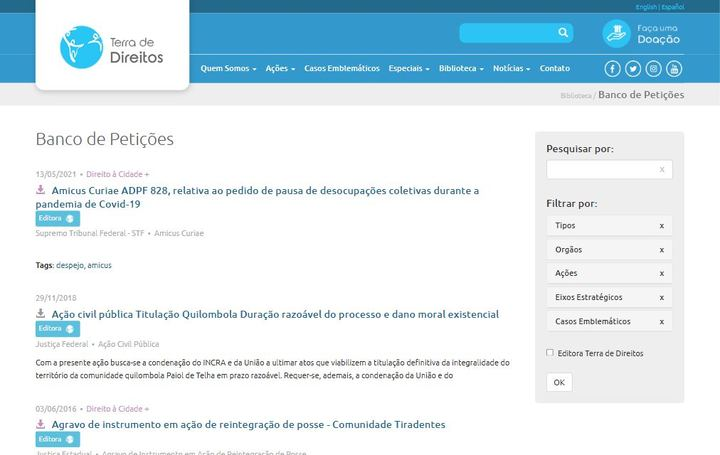
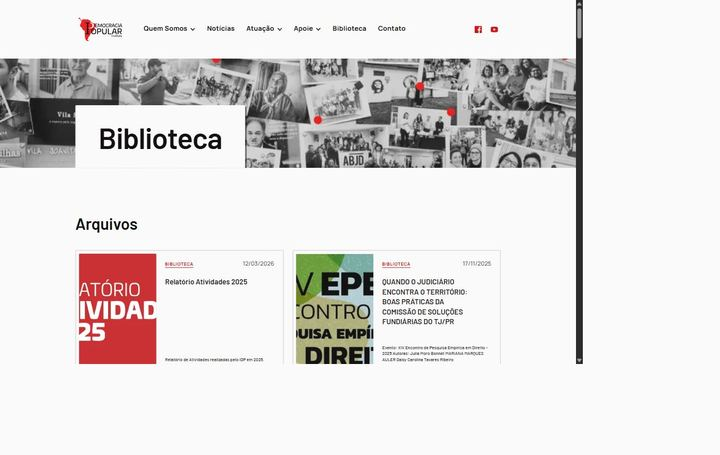
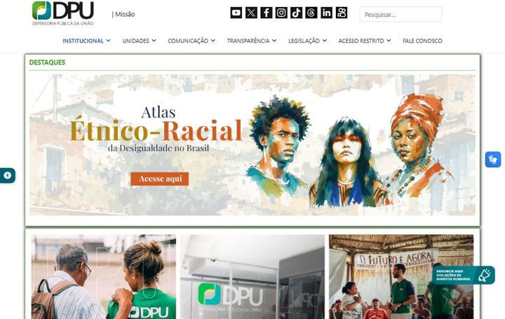
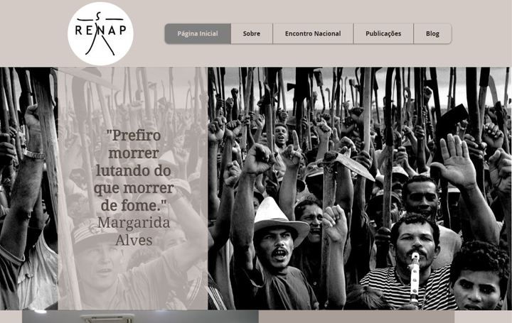
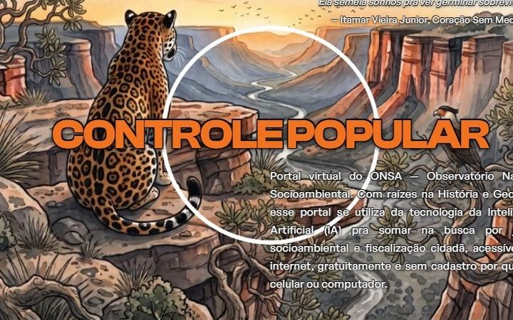
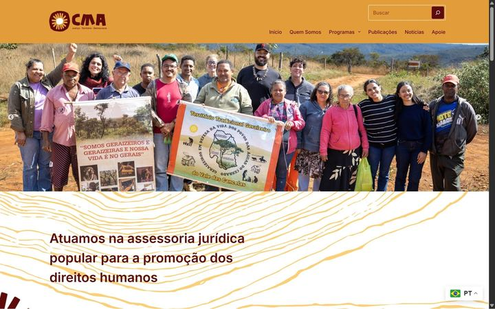

Articulação Nacional · 19 de novembro de 2026
Novo site da RENAP
Uma proposta em linguagem simples. Vinte e nove telas, cinco minutos.
Proposta do GT de Comunicação da RENAP
Use as setas, clique no lado direito ou deslize o dedo.
Decisões desta reunião
Pontos em aberto com sugestões possíveis
A RENAP (Rede Nacional de Advogados e Advogadas Populares) escolhe uma opção em cada linha. As quatro respostas definem preço, prazo e prioridade.
O que a pessoa precisa encontrar primeiro?
- Opção A: A pessoa encontra o documento em dois cliques.
- Opção B: A pessoa encontra a notícia do dia.
Exemplo: Quem recebe um link no WhatsApp procura o PDF (documento digital), não a capa do site.
Quem publica conteúdo no dia a dia?
- Opção A: Uma pessoa da Articulação Nacional ou do GT Comunicação publica.
- Opção B: Todo integrante aprovado pode publicar, na biblioteca ou no blog, por exemplo.
Exemplo: Hoje, a notícia depende de uma pessoa que tem a senha do Wix (plataforma de sites).
Quem pode descobrir que um documento restrito existe?
- Opção A: Só quem tem permissão vê o título e o arquivo.
- Opção B: Ninguém vê o título; o administrador envia o link direto.
Exemplo: O administrador envia o laudo (parecer técnico) do GT (Grupo de Trabalho) jurídico só para quem tem permissão.
O site precisa funcionar em internet lenta?
- Opção A: O site funciona com foto reduzida, página leve e sem vídeo.
- Opção B: Não. O site pode pesar e demorar para abrir.
Exemplo: A liderança em área rural perde tempo quando o site pesa no 3G (internet móvel).
Cada resposta vira requisito do plano de trabalho. Sem elas, a proposta não define entregas.
Referências · 1 de 2
Movimentos e organizações.
Prints de 19/11/2026. A legenda diz o que há no menu, nas funções e nas cores.






Nas seis páginas: menu de 4 a 12 itens e um bloco principal de notícia.
Referências · 2 de 2
Acervo, busca e serviço.
As páginas mais próximas do que a RENAP quer: documento com endereço e filtro.






Nas seis páginas: busca em cinco; acervo com nome próprio em quatro. ⚠️ O Coletivo Margarida Alves ficou fora: o navegador bloqueou o site (certificado).
Outras inspirações
Três sites para olhar de perto.
Dois do campo popular e um da RENAP. A escolha é de conteúdo, não de cópia.



O que os três têm: capa com foto, blocos com título e navegação por âncoras.
O que os 12 portais ensinam
Quase todos fazem a mesma coisa.
- Capa com uma manchete e foto forte.
- Acervo com nome próprio: biblioteca, banco de peças.
- Menu entre 4 e 12 itens, sem submenu profundo.
- Campanha no topo, com data visível.
- Contato e quem assina, à vista.
- Busca com filtro por tipo, órgão e data.
- Leitura em voz.
- Tema escuro e alto contraste.
- Glossário para leigo.
- Endereço antigo que continua abrindo.
Ou seja: copiar a capa é fácil. A diferença está no acervo.
A decisão de estilo
Sóbrio no corpo. Enfeite na borda.
Limpo e fácil de achar
Texto grande, contraste medido, pouca animação. Abre rápido no 3G.
Requintado e com efeito
Fundo em movimento, 3D, som. Bonito na vitrine, pesado na leitura.
- Efeito só na capa e em campanha. Nunca na página de documento.
- Quem usa leitor de tela ou celular fraco não pode perder nada.
- Movimento é escolha: existe botão de parar.
Não é 8 ou 80: o mesmo site pode ter as duas camadas.
O que já vem pronto
De graça, sem licença e sem fornecedor.
Fonte e ícone
Clash Display e General Sans (Fontshare), Lucide (ISC). Zero custo.
Sanfona e tema
<details> nativo e tema por CSS. Já estão nesta apresentação.
Busca
Meilisearch (MIT): busca em PDF e tolera acento.
Leitura em voz
Web Speech do navegador (grátis) e Piper (MIT) para uso sem internet.
Peso de imagem
Converter foto para WebP corta 60% do tamanho, sem programa novo.
Cópia de segurança
Script e agendador do próprio servidor (MIT). Testar restauração uma vez por mês.
Esforço: cada item acima é uma tarefa, não um projeto. Dá para entrar na fase 2.
O que queremos
Um site novo, bonito e fácil de usar.
Num lugar só: documentos públicos, banco de peças, notícias, fotos, vídeos e áudios. E uma área de administração para a Articulação.
- Documentos
- Peças
- Notícias
- Fotos
- Vídeos
- Áudios
A cara do site
Sério no conteúdo. Leve na leitura.
Título curto, texto curto, espaço em branco. A cor vem do território. O nome do tema aparece escrito.
Título em Clash Display
Corpo em General Sans, 1,5 de entrelinha.
Quanto temos para começar
R$ 3.440,00
Verba do projeto Fundo Casa. A primeira entrega cabe nesse valor.
Entra agora
O site novo, a migração e o conteúdo.
Fica para depois
O que não couber vira fase 2, com preço separado.
Depois da entrega: hospedagem e domínio passam a ser custo da RENAP. Números no anexo E.
Fase 1 · o que entra
Seis entregas.
- Site público com cara nova: início, contato, publicações e encontro.
- Migração das 36 publicações, 6 categorias e 6 páginas.
- Notícias, fotos e arquivos: PDF, áudio e vídeo curto.
- Documentos públicos com busca, filtro, data e endereço.
- Cadastro aberto, com aprovação do administrador.
- Temas de cor e linguagem simples com glossário.
Migração
Nada se perde. Nem o endereço.
36
publicações
6
categorias
6
páginas
0
link quebrado
Como se confere: todo endereço antigo abre ou redireciona. Nada dá 404.
Documentos, notícias e arquivos
Achar em dois cliques.
- Busca, filtro e data em cada documento.
- A fonte aparece junto do arquivo.
- A equipe publica sozinha, sem programador.
- Foto, PDF, áudio e vídeo curto, em versão leve.
Como se confere: digitei “Paraopeba” e achei o documento com a fonte.
Cadastro e administração
Cadastro aberto. Entrada, não.
- A pessoa se cadastra sozinha.
- Só entra quem o administrador aprova.
- Administrador é pessoa física, indicada pela RENAP.
- Todo administrador entra com senha e código.
Proteção: um administrador pode promover outro, com confirmação e registro.
Temas de cor
Oito jeitos de ver o mesmo site.
Toque num nome e esta apresentação troca na hora. Claro, escuro e alto contraste primeiro; depois, os biomas.
Tema em uso: Claro
Regra: cor nunca é o único sinal. Contraste é medido, nunca estimado.
Sigilo · fase 2
Quatro níveis. Cada documento no seu.
Qualquer pessoa vê, sem entrar.
Só pessoa logada e aprovada.
Só o grupo indicado. Exemplo: Articulação Nacional.
Só o administrador e quem ele autorizar.
O administrador classifica cada documento e pode mudar depois.
Fase 2 · se couber
Possibilidade de funções no site
São funções extras, que entram depois se couber no orçamento. Cada uma vem com preço e prazo à parte.
Cada linha traz a função e um exemplo. Item sem resposta é tratado como “não faz”.
Conexão para publicar · API
Chave de edição do site com níveis de acesso (API)
API é a porta entre dois programas: o site e outro programa, como ChatGPT ou Claude.
Chave geral
Abre a casa inteira: cria, edita e apaga qualquer publicação.
Chave de notícias
Abre uma gaveta só: mexe em notícia e em mais nada.
- Cada vez que uma chave é usada, fica registrado: quem, quando e o quê.
- Qualquer chave pode ser cancelada a qualquer momento.
- A chave geral fica com a RENAP. O fornecedor usa só na entrega.
Cuidado com quem lê e com quem administra
Quatro garantias.
Cópia diária
Com restauração testada. Sem isso, um erro apaga história.
Restrito fora da busca
Não aparece no Google nem na busca do site.
Registro de acesso
Quem viu e quem baixou. Permite responder a um vazamento.
Sem rastreamento
Sem autoplay na área restrita. A audiência só é medida no público.
Três caminhos para a mesma informação
Acessibilidade comunicacional
Para quem não enxerga, para quem tem dificuldade de ler e para quem prefere perguntar.
- Leitura em voz alta: o navegador lê a página em português. A pessoa aperta “ouvir” e acompanha o texto. Não custa nada.
- Sem internet: existe leitor de código aberto (Piper) que faz o mesmo no computador da sede.
- Robô de conversa (chatbot): a pessoa pergunta com as próprias palavras e recebe a resposta com o link da fonte.
- Imagem e vídeo: toda foto tem descrição escrita; todo vídeo tem legenda.
- Limite do robô: não acessa documento restrito nem dado de pessoa. Se não souber, diz que não sabe e passa para o atendimento humano.
Quer ver o robô e o rádio funcionando? Anexo C.
O que precisamos decidir
Cinco respostas destravam o começo.
Orçamento
O que entra nos R$ 3.440 e o que fica para a fase 2.
Prazo
Data de cada entrega.
Aprovação
Uma pessoa responde pelo projeto.
Sigilo
Exemplos de público, interno, restrito e sigiloso.
Conteúdo
Textos, fotos, PDFs e direito de uso.
Se der para responder só cinco: orçamento, prazo, aprovação, sigilo e conteúdo.
Glossário da reunião
Palavra difícil, explicada.
API
Porta de um programa para outro.
Chave de acesso
Como uma senha de máquina.
Dois passos
Senha mais um código do celular.
Sigilo
Quem pode ver cada documento.
Endereço antigo (301)
Aponta para o novo, para sempre.
Código aberto
Programa que podemos manter sem licença.
Próximo passo
Uma reunião para fechar as cinco.
Com as respostas, a proposta vira plano de trabalho: o que entra, quando fica pronto e quanto custa.
GT de Comunicação da RENAP
Anexos: A efeitos · B sanfona · C busca, robô e rádio · D fontes · E hospedagem. Versão do briefing: 19/11/2026.
Anexo A · efeitos
Enfeite que não atrapalha.
Passe o mouse e toque. Nada aqui carrega informação sozinho.
Sombra e brilho
Sobe 2 px no mouse; o brilho segue o ponteiro.
Pulso
Anel que respira. Chama o clique sem piscar.
Ímã
O botão se aproxima do ponteiro. No dedo, não se move.
Contador
O número sobe quando aparece na tela. O valor final está no HTML.
R$ 3.440
Regra: tudo para em prefers-reduced-motion e nada é o único sinal de estado.
Anexo B · sanfona
Abre e fecha sem JavaScript.
A linha inteira é o alvo. A seta gira e o texto diz “Abrir”.
O que é sigilo de documento? Abrir Fechar
Como funciona a chave de publicação? Abrir Fechar
E se o site sair do fornecedor? Abrir Fechar
Componente do design system do Controle Popular, com os tokens da RENAP.
Anexo C · busca, robô e rádio
Três coisas que a pessoa usa.
Busca
Digite “mineração” ou “encontro”.
- Relatório da barragem de Paraopeba PDF
- Chamada do Encontro Nacional notícia
- Nota sobre royalties da mineração PDF
- Banco de peças jurídicas peça
4 documentos
Robô de conversa
Responde com fonte. Se não souber, diz que não sabe.
Olá. Pergunte sobre documentos da RENAP.
Botão que responde
Foco visível, toque de 44 px e volta ao normal.
O robô é demonstração. O rádio toca de verdade: são estações públicas, com o stream conferido pelo Controle Popular.
Anexo D · fontes
A letra também é escolha.
Toque num nome para ver o título desta página mudar. As gratuitas vêm do Fontshare.
Fontshare · grátis
Brasileiras · licença paga (Plau, do Rio)
RENAP — o povo escreve a sua história
Mesma frase, letra escolhida.
Xilogravura: não achei família livre com licença clara hoje. O caminho honesto é licenciar uma brasileira ou encomendar letreiro. Nada aqui foi usado sem licença.
Anexo E · custos de manter
Quanto custa ficar no ar.
Preços de 19/11/2026, em semana de promoção. O valor mais barato de cada casa, por mês.
| Onde | Plano | Mais barato | Observação |
|---|---|---|---|
| Guara Cloud (BR) | Starter | R$ 19,99/mês | 20 GiB, 3 dias de teste grátis |
| KingHost (BR) | Hospedagem I | R$ 5,99/mês | no ciclo de 2 anos; tabela R$ 29,90 |
| HostGator (BR) | Plano P | R$ 10,09/mês | servidores no Brasil; ciclo longo |
| Hostinger | entrada | R$ 5,99/mês | promoção; renovação R$ 29,99 |
| Wix | Light | US$ 17/mês | em dólar, com IOF; domínio 1 ano |
| Cloudflare Pages | estático | R$ 0 | serve esta apresentação |
| Domínio .org.br | renap.org.br | tabela Registro.br | já registrado; renovação anual |
WordPress não tem linha: o programa é grátis, o custo é a hospedagem acima. Domínio: o Registro.br não abriu a tabela para leitura automatizada hoje — confirme o valor no painel e eu atualizo aqui.
Recomendação: começar com hospedagem estática gratuita e guardar dinheiro para o domínio.